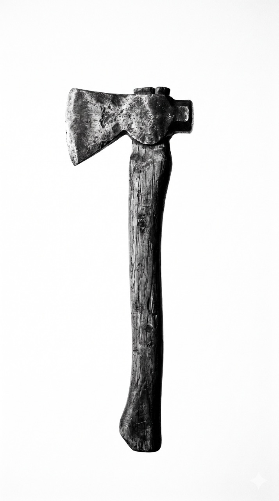

Toca para revelar el Principio III.

Pilar de Cultura / Principio III
La mentalidad del guerrero operativo.
El verdadero dominio no es la victoria en la batalla, es la preparación en la sombra.
"Afilamos el hacha aunque no vayamos a cortar ningún árbol."
Trata de entrenarse todo el tiempo para que podamos tomar cualquier oportunidad porque ninguna nos agarra desprevenidos. Este pilar define la **anticipación** como nuestra principal arma operativa.